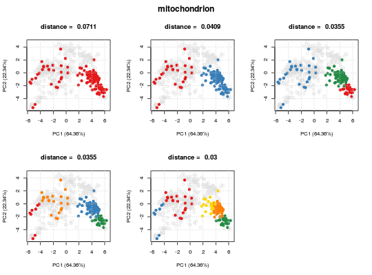

Class
The ClustDist summaries algorithm information, from
running the clustDist function, such as the number
of k's tested for the kmeans, and mean and normalised
pairwise (Euclidean) distances per numer of component
clusters tested.
Objects from the Class
Object of this class are created with the clustDist
function.
Slots
k:- Object of class
"numeric"storing the number of k clusters tested. dist:- Object of class
"list"storing the list of distance matrices. term:- Object of class
"character"describing GO term name. id:- Object of class
"character"describing the GO term ID. nrow:- Object of class
"numeric"showing the number of instances in the set clustsz:- Object of class
"list"describing the number of instances for each cluster for each k tested components:- Object of class
"vector"storing the class membership of each protein for each k tested. fcol:- Object of class
"character"showing the feature column name in the correspondingMSnSetwhere the protein set information is stored.
Methods
- plot
- Plots the kmeans clustering results.
- show
- Shows the object.
Examples
showClass("ClustDist")#> Class "ClustDist" [package "pRoloc"] #> #> Slots: #> #> Name: k dist term id nrow clustsz #> Class: numeric list character character numeric list #> #> Name: components fcol #> Class: vector characterlibrary('pRolocdata') data(dunkley2006) par <- setAnnotationParams(inputs = c("Arabidopsis thaliana genes", "Gene stable ID"))#>#>#> Connecting to Biomart...## add protein set/annotation information xx <- addGoAnnotations(dunkley2006, par) ## filter xx <- filterMinMarkers(xx, n = 50)#>#>#> | | | 0% | |====== | 8% | |============ | 17% | |================== | 25% | |======================= | 33% | |============================= | 42% | |=================================== | 50% | |========================================= | 58% | |=============================================== | 67% | |==================================================== | 75% | |========================================================== | 83% | |================================================================ | 92% | |======================================================================| 100%## plot clusters for first 'ClustDist' object ## in the 'ClustDistList' plot(dd[[1]], xx)## plot distances for all protein sets plot(dd)